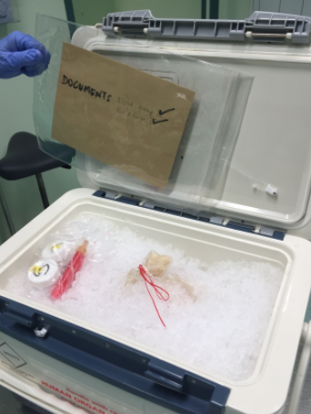
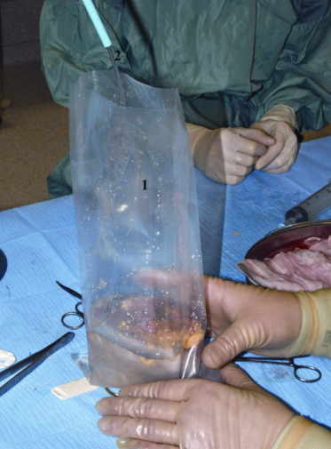
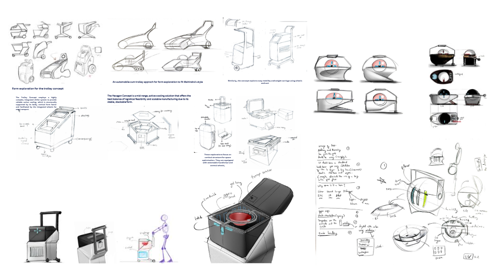
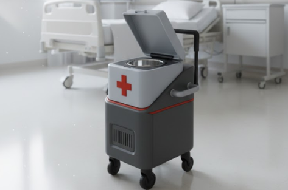
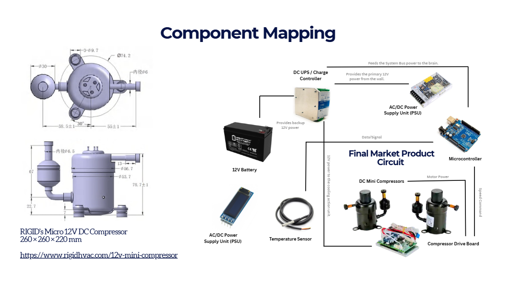

02 — Medical Product Design
REVIVE
"A trolley-based active cooling system designed to improve organ preservation during medical transport — bridging the gap between ice boxes and expensive perfusion systems."
Organ transportation in India still relies on traditional ice boxes that provide unstable temperature regulation with no real-time monitoring, creating high risk of organ damage during transit. Advanced perfusion systems offer superior preservation but remain largely inaccessible due to extremely high costs. Affordability remains the primary barrier to adoption.

Existing ice-box method — current standard in India

Hospital transport context and workflow
Design explored mobility, cooling integration, and medical usability through multiple trolley configurations focusing on stability, portability, and structural integration. Multiple concept directions were explored — from automobile-inspired forms to hexagonal stackable units.

Concept exploration — multiple trolley configurations and form studies
The system integrates multiple technologies to create a comprehensive organ preservation solution. Arduino serves as the central brain, coordinating all sensors and systems in real-time.
Active chiller maintaining 2–8°C. Phase-changing material gel packs + Vacuum Insulation Panels + Polyisocyanurate foam for thermal buffering.
Temperature & humidity sensors with real-time LED display of battery and sensor readings. Continuous organ safety monitoring.
Gyroscope system for tilt detection and shock absorption. Reduces physical stress on the organ during transit across rough terrain.
12V battery backup system with AC/DC Power Supply Unit. DC UPS/Charge Controller ensures uninterrupted operation.
Arduino microcontroller as central processing unit. Compressor Drive Board controls the RIGID Micro 12V DC Compressor (260×260×220mm).
Integrated wheels for easy transport. Ergonomic handle design for one-handed operation. Designed for hospital corridor and ambulance use.

Final design — REVIVE Smart Organ Transportation Unit

System architecture — integrated cooling & monitoring system
The final design is a trolley-based smart organ transport unit developed as a reliable alternative to conventional ice boxes. The system integrates an active cooling mechanism maintaining a stable 2–8°C environment, supported by PCM-based insulation for thermal buffering and real-time temperature monitoring. Gyroscopic stabilization enhances handling and orientation, reducing physical stress on the organ. Positioned as an accessible bridge between traditional ice storage and costly perfusion systems, the design improves preservation reliability, minimizes transit risks, and supports safer organ transportation within resource-constrained healthcare environments.